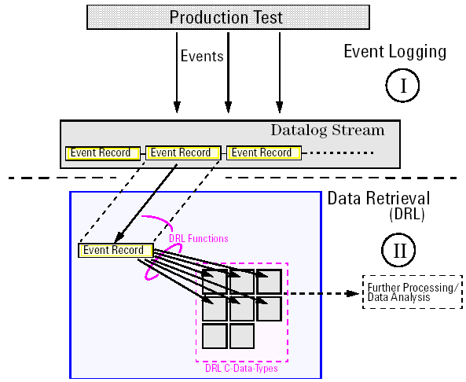

How event data logging works
The figure below shows a block diagram illustrating the complete data logging process. The process consists of the actual logging of production test result data and the retrieval of the data.

As shown in the figure above, the data logging process can be divided into two major parts, event logging and data retrieval.
Event logging
Whenever an event occurs during the production test, an event record is immediately written to the data log stream. The data log stream thus holds the event records in the order in which the events occurred.
Each event record contains all attributes which are related to the event. See EDF data organization for more information on the contents of an event record.
Data retrieval
As soon as an event record has been written to the data log stream, it is forwarded to clients that have registered to receive data logging events.
The Data Retrieval Library (DRL) is the interface to the data log stream and its contents. This library provides a set of C functions (the DRL functions) and C data types (the DRL data types). The Event Formatter and the Line Formatter are flexible data retrieval tools based on the Data Retrieval Library.
If you want to write your own data retrieval routines, DRL functions let you directly access the data log stream and read event records from it. Using other DRL functions, you can extract data from the read event records and then store it in DRL data types. This way, the data is available in a very convenient format for further analysis and processing.
The DRL also lets you save the complete data log stream to a file and later access this file for offline analysis of logged data.
DRL functions and data types enable you to program a data retrieval and analysis process which completely meets your needs of retrieving data from a running production test.
The Data Retrieval Library is included with the SmarTest software package. The header file of the DRL is /opt/hp93000/soc/com/include/drl.h. In this directory, you also find the header files dcl.h and dcl_drl.h which also are related to the data retrieval library.
The DRL runs only on Linux.
For a detailed description of DRL functions and DRL data types see Data Retrieval Library.
Functional changes
- Introduced before SmarTest 6.3.2